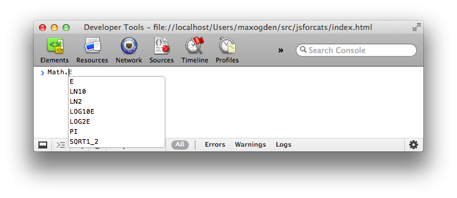
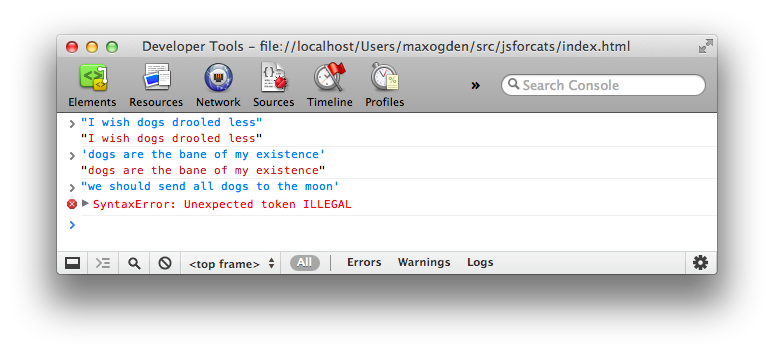
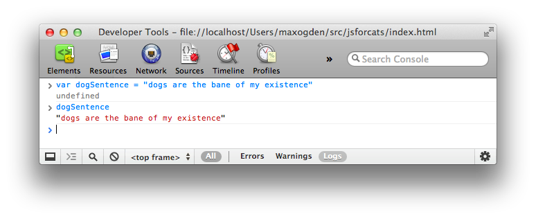
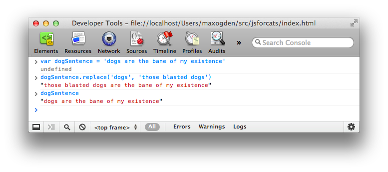
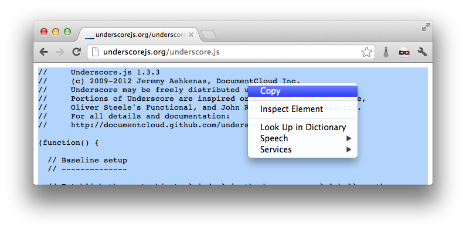
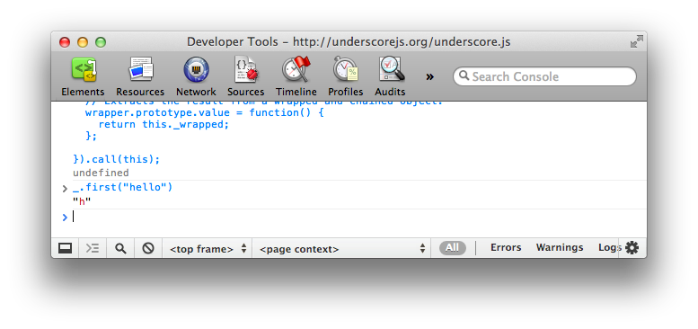
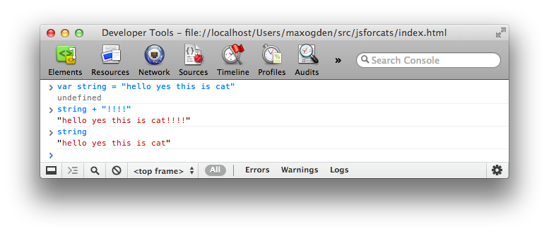
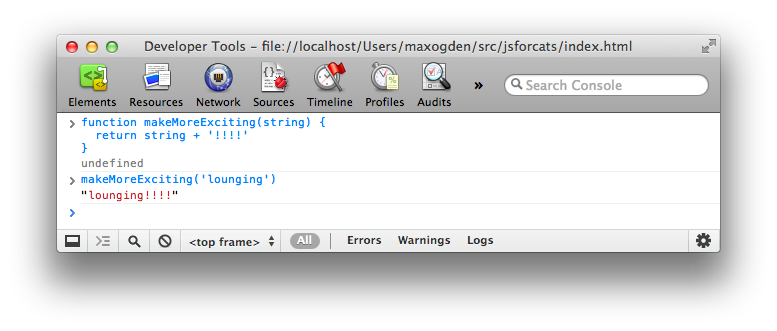
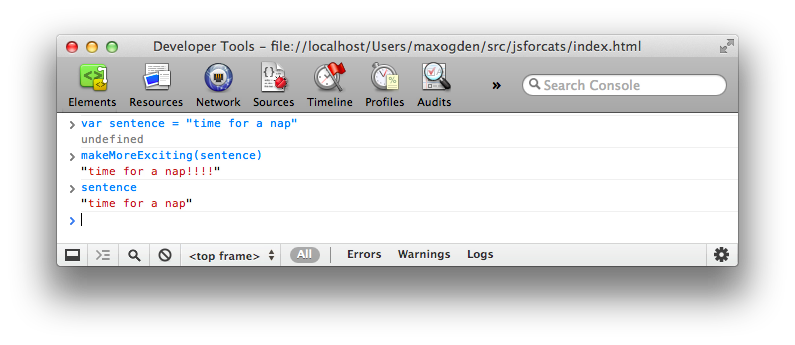
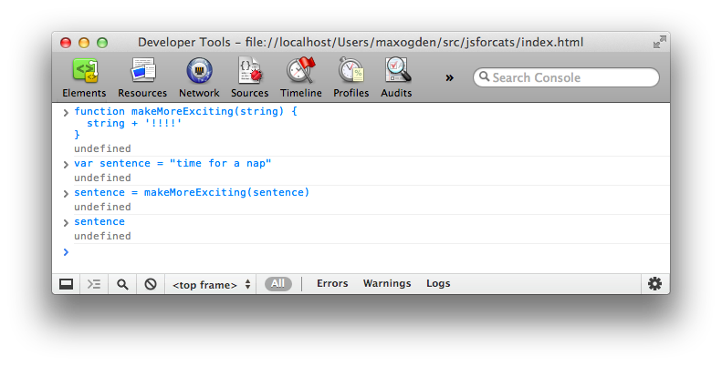

JavaScript For Cats
An introduction for new programmers
So easy your human companion could do it too!
JavaScript is a programming language or, in other words, a means by which a computer is instructed to do things. Just the same as one controls humans with hisses and meows, one controls computers with statements written in a programming language. All web browsers understand JavaScript and you can take advantage of that to make web pages do crazy things!
JavaScript started as a programming language to make internet pages more interactive. Nowadays JavaScript runs in more places than just web browsers — it runs on web servers, phones and even robots! This page will teach you some JavaScript basics so that you can get up and running in no time*!
* actual time: more than none. Probably an hour or two. Also since you are a cat you are less likely to run and more likely to lay around in the sun
Table of contents
- The console
- Strings
- Values and variables
- Using functions
- Built in JS functions
- Download new JS functions
- Writing new functions
- Loops
- Arrays
- Objects
- Recommended reading
If you don't want to read it all now here is a PDF version you can keep for later.
Don't be a scaredy-cat
 You
will always land on your feet — even when programming! Unlike pawing over a glass of water on
your laptop, nothing in these tutorials will damage your computer
in any way, even if you mistype a command or click the wrong button. Unlike
cats, computer programmers make mistakes all time: misspelling things,
forgetting quotes or brackets, and being forgetful of how basic functions
(and yarn) work. Programmers care more about making it work eventually rather
than trying to make it work the very first time. The best way to learn
is by making mistakes!
You
will always land on your feet — even when programming! Unlike pawing over a glass of water on
your laptop, nothing in these tutorials will damage your computer
in any way, even if you mistype a command or click the wrong button. Unlike
cats, computer programmers make mistakes all time: misspelling things,
forgetting quotes or brackets, and being forgetful of how basic functions
(and yarn) work. Programmers care more about making it work eventually rather
than trying to make it work the very first time. The best way to learn
is by making mistakes!
{kind=link}
So don't be a scaredy-cat! The absolute worst thing that will happen is that you might have to refresh this page in your web browser if you get stuck. Don't worry though, this will happen very rarely — and we're talkin' 13-toed cat rare.
# The basics
There is JavaScript running on this page right now! Let's play around with it a little. For the sake of simplicity I'll assume you are using Google Chrome to read this page (if you aren't it's probably easier on both of us if you follow along with Chrome).
First, right click anywhere on the screen and hit Inspect Element, then click on the Console tab. You should see a thingy that looks like this:

This is a console, otherwise known as a "command line" or "terminal". Basically its a way to type one thing at a time into a computer and immediately get the computer's answer back. They are super useful as a learning tool (I still use the console nearly every day that I'm coding).
The console does some pretty cool stuff. Here I have started to type something
and the console is helping me out by giving me a list of all the possible
things I could continue to type! Another thing you could do is type
1 +
1
into the console and then hit the Enter key
and watch what happens.
Using the console is a very important part of learning JavaScript. If you don't know if something works or what the command is for something, go to the console and figure it out! Here's an example:
# Strings
Since I am a cat I want to replace every instance of the word dog on the Internet with those blasted dogs. First go into your console and
type in a few sentences that contain the word dog at least once. In JavaScript a bunch of letters,
numbers, words or anything else is known as a String (as
in a string of characters). Strings have to begin AND end with a
quotation mark. Single ' or
double " is fine,
just make sure you use the same at the beginning as you do at the end.

See the nasty error message? Don't worry - you didn't break any laws. SyntaxError ILLEGAL is just the way it sounds when robots tell you that your program has a problem. The first two sentences had matching quotation marks at the beginning and end, but when I mixed single and double quotation marks it freaked out on me.
OK, to fix up one of these sentences (by replacing dog with our enhanced version) we have to first save
the original sentence so that we can call it up later when we do our replacing
magic. Notice how the string gets repeated in red when we type it into
the console? This is because we haven't told it to save the sentence anywhere
so it just gives it right back (or it gives us an Error back if we messed
something up).
# Values and variables
Values are the simplest components in JavaScript.
1
is a value, true is
a value, "hello" is
a value, function() {} is
a value, the list goes on! There are a handful of different types of
values in JavaScript but we don't need to go over them all right away —
you will learn them naturally the more you code!
To store values we use things called variables. The word 'variable' means 'can change' and is used because variables can store many different types of values and can change their value many times. They are pretty much like mailboxes. We put something in a variable, like our sentence, and then give the variable an address that we can use to look up the sentence later. In real life mailboxes have to have PO Box numbers but in JavaScript you usually just use lowercase letters or numbers without any spaces.

var is
shorthand for variable and the = means store the thing on the right-hand side in the thing on the left-hand side.
Also as you can see, now that we are storing our sentence in a variable
the console doesn't just return our sentence right away, but instead gives
us undefined which
means there was nothing to return.
If you simply type a variable name into the console it will print out
the value stored in that variable. A note about variables is that by default
they go away when you switch to a different page. If I were to hit the
Refresh button in Chrome, for example, my dogSentence variable would get wiped and it would
be like it never existed. But don't worry about this too much for now —
you can just hit the up or down arrows on your keyboard while in the console
to go through everything you've entered in recently.
# Functions
Now that we have our sentence stored in a variable let's give that variable to something that will replace words! We call things that perform actions like this functions because, well, they serve a specific function (AKA purpose or action) for us. Calling them "actions" sounded weird I guess so they went with the word "function" instead.
JavaScript has a function called replace that
does exactly what we want! Functions take in any number of values (zero,
one or many) and return either nothing (undefined) or exactly one value (functions can't
return two or more values at a time — only a single value). The replace function is available to use on any strings
and takes in two values: the characters to take out and the characters
to swap in. It gets confusing to describe these things so here is a visual
example:

Notice how the value of dogSentence is
the same even after we run replace on
it? This is because replace (and
most JavaScript functions for that matter) takes the variable or value
that we give it and returns a new value instead of modifying
the thing we passed in. Since we didn't store the new variable (there is
no = on
the left side of the replace function) it just printed out the return value
in our console.
# The "standard library"
You might be wondering what other functions are available in JavaScript. The answer: A TON. There are lots built in, standard libraries that you can learn about at MDN (A site run by Mozilla that has lotsa nifty information about web technologies). For example here is the MDN page on JavaScript's Math object.
# Third-party JavaScript
There is also a lot of JavaScript code available that is not built in. JavaScript from third parties is usually referred to as a "library" or "plugin". One of my favorites is called Underscore.js. Let's go and grab it and load it into our page! First go to the Underscore site, http://underscorejs.org/, click on the download link (I usually use development versions because they are easier to read but both will give you the same basic functionality), and then copy all the code onto your clipboard (you can use Select All from the Edit menu to select everything).

Then paste it into your console and hit enter. Now your browser has a
new variable in it: _.
Underscore gives you a ton of helpful functions to play with. We'll learn
more about how to use them later.

# Making new functions
You aren't limited to using other peoples functions — you can also write
them yourself. It's pretty easy! Let's make a function called makeMoreExciting that adds a bunch of exclamation
points to the end of a string.
function makeMoreExciting(string) {
return string + '!!!!'
}In my head I read it out loud like this: "there's a function called 'make more exciting' that takes in a string and returns a new copy of that string that has a bunch of exclamation points at the end". Here is how we would write this in the console manually if we weren't using a function:

The expression string + '!!!!' returns
a new string and our variable called string stays
the same as before (since we never updated it to anything else with
=
).
Let's use our function instead of doing it manually. First, paste the function into the console and then call the function by passing in a string:

You could also call the same function by passing in a variable that points to a string (in the above example we just typed the string straight in there as a value instead of saving it to a variable first):

The line makeMoreExciting(sentence) is
equivalent to saying sentence + '!!!!'.
What if we wanted to modify in-place (aka update) the value
of sentence? Simply save the return value of the function back into our
sentencevariable:
var sentence = "time for a nap"
sentence = makeMoreExciting(sentence)Now sentence will
have the exclamation marks in it! Note that you only have to use var when you are initializing a
variable — the first time you ever use it. After that you shouldn't use
var
unless you want to re-initialize (reset/clear/empty) the variable.
What would happen if we took out the return statement
in our function?

Why is sentence empty?
Because functions return undefined by
default! You can choose to return a value by returning something.
Functions should take in a value and, if they change the value or create
a new value that is supposed to be used later, return a value (fun
fact: a fancy term for this style is functional programming). Here
is another function that doesn't return anything but instead uses a different
method to show us the output:
function yellIt(string) {
string = string.toUpperCase()
string = makeMoreExciting(string)
console.log(string)
}This function, yellIt,
uses our previous function makeMoreExciting as
well as the built-in String method toUpperCase.
Methods are just a name for a function when it belongs to something — in
this case toUpperCase is
a function that belongs to String so
we can refer to it as either a method or a function. makeMoreExciting on the other hand doesn't belong
to anyone so it would be technically incorrect to refer to it as a method
(confusing, I know).
The last line of the function is another built-in that simply takes in any values that you give it and prints them out into the console.

So is there something wrong with the above yellIt function? It depends! Here are the two major
types of functions:
- functions that modify or create values and return them
- functions take in values and perform some action that cannot be returned
console.log is
an example of the second type of function: it prints things out to your
console — an action that you can see with your eyes but that cannot be
represented as a JavaScript value. My own rule of thumb is to try to keep
the two types of functions separate from each other, so here's how I would
rewrite the yellIt function:
function yellIt(string) {
string = string.toUpperCase()
return makeMoreExciting(string)
}
console.log(yellIt("i fear no human"))This way yellIt becomes
more generic, meaning it only does one or two simple little
things and doesn't know anything about printing itself to a console — that
part can always be programmed later, outside the function definition.
# Loops
Now that we have some basic skills under our belt (Author's note: do cats even wear belts?) we can start being lazy. What?! Yes, that's right: programming is about being lazy. Larry Wall, inventor of the Perl programming language, called laziness the most important virtue of a good programmer. If computers didn't exist you would have to do all sorts of tedious tasks by hand, but if you learn to program you can lay in the sun all day while a computer somewhere runs your programs for you. It is a glorious lifestyle filled with relaxation!
Loops are one of the most important ways to harness the power of a computer.
Remember Underscore.js from
earlier? Make sure you have it loaded in the page (remember: you can just
hit the up arrow on your keyboard a few times and then hit Enter to load it in again if you need to) and try
copy/pasting this into your console:
function logANumber(someNumber) {
console.log(someNumber)
}
_.times(10, logANumber)This code uses the times method of Underscore which takes in 1 number and 1 function and then starts from 0 and for 10 steps counts up by 1, calling the function with the number each step of the way.

If we were to manually write out what times is doing in the above code it would look like
this:
logANumber(0)
logANumber(1)
logANumber(2)
logANumber(3)
logANumber(4)
logANumber(5)
logANumber(6)
logANumber(7)
logANumber(8)
logANumber(9)But cats refuse to do unnecessary manual work like this so we must always ask ourselves, "am I doing this in the laziest way possible?".
So why is this called looping? Think of it like this: If we were to write out a list of 10 numbers (from 0 to 9) using a JavaScript Array it would look like this:
var zeroThroughTen = [0, 1, 2, 3, 4, 5, 6, 7, 8, 9]What times really
does is visit each number and repeat a task: in the example above the task
was to call the logANumber function
with the current number. Repeating tasks in this way is referred to as looping over the
Array.
# Arrays
I've mentioned these a few times but let's spend a minute learning about them. Imagine you need to keep track of all your buddies. Well, an Array will do just fine. Think of an Array like a sorted list that you can keep tons of stuff in.
This is how you make one:
var myCatFriends = ["tommy", "tabby", "ceiling"]Sweet! Now you have a list of your cat buddies.
Elements (that is what you call a single item in an array) that are stored
within arrays start at 0 and count up from there. So myCatFriends[0] returns
tommyand myCatFriends[1] returns
tabby... etc etc.
To get buddies out of your brand new Array you can just access an element directly like so:
console.log(myCatFriends[0])

If you made a brand new cat friend at the hippest cat club the other night
and you want to add them to your list it is super simple: myCatFriends.push("super hip cat").
To check that the new cat made it into your array you can use .length:

Notice how push returned
the length? Handy! Also take note that arrays will always preserve ordering which
means they will remember the order in which you added or defined things.
Not everything in JavaScript preserves ordering so remember this special
property of Arrays!
# Objects
Arrays are good for lists, but for other tasks they can be hard to work with. Consider our array of cat friends. What if you also wanted to store more than just names?
var myCatFriends = ["tommy", "tabby", "ceiling"]
var lastNames = ["the cat", "cat", "cat"]
var addresses = ["The Alley", "Grandmas House", "Attic"]Sometimes it is nice to have all of the addresses or names in one variable. But sometimes you have a cat in mind, let's say Tommy, and you just want to look up that cat's address. With arrays it takes a lot of work because you can't just say 'hey array, give me Tommy's address' because 'Tommy' is in one array and his address is in a totally different array.

This can be brittle because if our arrays change and we add a new cat
to the beginning we would have to also update our tommysPosition variable to point to the new location
of Tommy's information in the arrays! Here is a easier to maintain way
to store information like this using objects:
var firstCat = { name: "tommy", lastName: "the cat", address: "The Alley" }
var secondCat = { name: "tabby", lastName: "cat", address: "Grandmas House" }
var thirdCat = { name: "ceiling", lastName: "cat", address: "Attic" }Why would we do it this way? Because now we have a variable for each cat that we can use to get that cats values in a more convenient and readable way.

You can think of Objects like keys on a keyring. Each one is for a specific
door and if you have nice labels on your keys you can open doors very fast.
In fact, the things on the left hand side of the : are called keys (are also known
as properties) and the things on the right hand side are values.
// an object with a single key 'name' and single value 'tommy'
{ name: 'tommy' }So why would you ever use arrays if you can just put your data in objects? Because objects don't remember the order of the keys that you set. You might enter in an object like this:
{ date: "10/20/2012", diary: "slept a bit today", name: "Charles" }But the computer could give it back to you like this:
{ diary: "slept a bit today", name: "Charles", date: "10/20/2012" }Or like this!
{ name: "Charles", diary: "slept a bit today", date: "10/20/2012" }So you can't ever trust the order of keys in objects. If you wanna get REALLY fancy you can make an array filled with objects, or an object filled with arrays!
var moodLog = [
{
date: "10/20/2012",
mood: "catnipped"
},
{
date: "10/21/2012",
mood: "nonplussed"
},
{
date: "10/22/2012",
mood: "purring"
}
]
// ordered from least to most favorite
var favorites = {
treats: ["bird sighting", "belly rub", "catnip"],
napSpots: ["couch", "planter box", "human face"]
}When you combine different things like this you are making data structures, just like legos!
That is the end for now, but here's what I'm working on:
- More crazy looping!
- JSON!
- Grabbing stuff from other pages on the internet and displaying it
- How to use Github to find and share code
- Node.js and server side catgramming
Got another topic you wanna see covered? Open an issue for it on github.
I'd recommend coming back again tomorrow and going through the entire thing again from the beginning! It might take a few times through before you get everything (programming is hard). Just try to avoid reading this page in any rooms that contain shiny objects . . . they can be incredibly distracting.
# Recommended reading
JavaScript For Cats skips over lots of details that aren't important for getting started (cats are not known for their attention spans), but if you feel like you need to dive in deeper then check these out:
- NodeSchool.io is a community driven, open source educational software that teaches various node.js and JavaScript skills in an interactive, self-guided format. I helped make NodeSchool! Sadly it features less cats than this page.
- Eloquent Javascript is a free book that teaches you JavaScript! It's pretty good! Especially the chapter on values, variables, and control flow
- Mozilla's JavaScript Guide also has a pretty sweet intro chapter called values, variables and literals
- Felix's Node.js Style Guide was written about programming JavaScript on the server-side using Node.js but there are lots of tips in here that are useful for anyone programming with JavaScript.
# Satisfied customers
Here are some of our early students (some went on to found the successful company RealtimeCats® which offers "Software as a Service" integrated cloud solutions for high resolution feline imagery in faster than real time)


JSForCats.com is a labor of love and work in progress by @maxogden. If you would like to contribute and make this tutorial better there is a Github repo right over here. Bonus: Here is a PDF version of JSForCats.